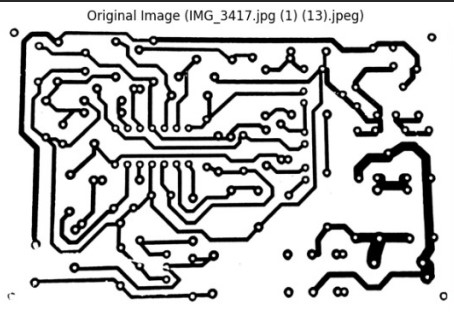
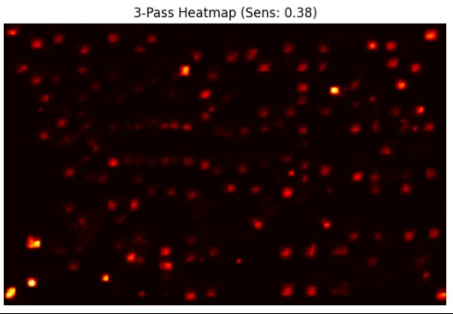
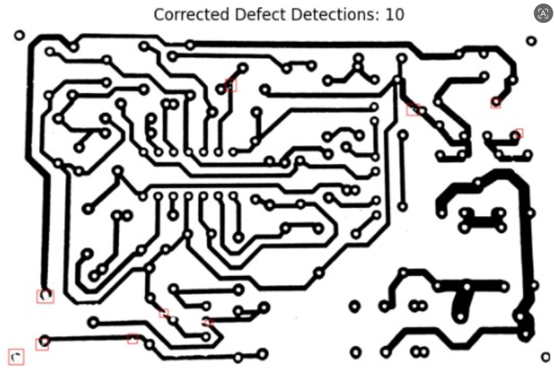

Week 11: Quantization-Aware Training (QAT) & Dual-Branch Architecture Optimization
Date range: [2026-07-13 to 2026-07-17]
This week marks the completion of our INT8 Quantization-Aware Training (QAT) pipeline using PyTorch's qnnpack engine, technical verification of our 5-stream feature fusion network, and deployment optimization for real-time edge execution on the Raspberry Pi 5.
Milestones & Accomplishments Summary
⚡ 8-Bit Quantization (QAT)
Integrated PyTorch QuantStub/DeQuantStub and FloatFunctional modules. Fine-tuned with qnnpack backends, yielding a ~75% reduction in model size while retaining detection accuracy.
🧩 5-Stream Feature Analysis
Formally defined network feature flow: 4 FPN multi-scale feature maps (p2, p3, p4, p5) concatenated with a 32-channel handcrafted edge embedding, forming a 160-channel prediction head.
🎯 3-Pass Multi-Scale Engine
Deployed multi-scale inference across 192×192, 256×256, and 320×320 tile windows with automated Point-in-Polygon physical drill hole suppression to eliminate false positives inside vias.
Deep Architecture & Feature Stream Breakdown
Our defect detection architecture combines deep semantic feature extraction with high-frequency spatial edge filtering:
1. Deep Semantic Branch (VGG16-BN + FPN) — 4 Feature Maps
The backbone utilizes a VGG16-BN (Batch Normalized) network coupled with a Feature Pyramid Network (FPN) to construct 4 multi-scale semantic feature maps:
- p5 Feature Map: Derived from VGG Stage 5 (Deepest semantics, global context).
- p4 Feature Map: Derived from VGG Stage 4.
- p3 Feature Map: Derived from VGG Stage 3.
- p2 Feature Map: Derived from VGG Stage 2 (Highest spatial resolution for fine defects).
Note: VGG Stage 1 (c1) is omitted from FPN lateral layers to maintain optimal computational throughput.
2. Handcrafted Shallow Edge Branch — 17 Spatial Features
Before spatial downsampling occurs, the input passes through a custom ShallowFeatureExtractor17 layer computing 17 exact mathematical operations:
These 17 channels pass through a 2-stage convolutional block (17 → 32 → 32 channels) to produce the shallow embedding s_embed.
3. Final Head Concatenation (160 Channels)
The 4 FPN maps are concatenated and fused into a 128-channel block (fpn_embed). This is concatenated with the 32-channel shallow embedding (s_embed) to form a 160-channel prediction head:
Final Input = Concat(FPN_Embed [128 ch], Shallow_Embed [32 ch]) = 160 Channels
Mathematical Formulations & Loss Function
Combined Binary Cross-Entropy (BCE) & Dice Loss
To overcome extreme class imbalance where microscopic PCB defects represent < 1% of total surface pixels, we optimize the model using a hybrid loss function:
Where y represents ground truth pixel masks, ŷ represents model probability predictions, and ε = 10−5 prevents division by zero.
Physical Drill Hole Circularity Metric
Physical drill holes and vias are detected using grayscale intensity thresholding (I > 180) and filtered using the circularity ratio (C):
Regions satisfying 10 < Area < 2000 and C > 0.68 are tagged as valid physical drill holes. Predicted defect centroids inside these regions are automatically suppressed.
Interactive Project Resources & Links
Access our live training notebooks, evaluation scripts, and LaTeX documentation:
Implementation Source Code Snippets
1. Google Colab Quantization-Aware Training (QAT) & Export
# --- QUANTIZATION-AWARE TRAINING SETUP ---
import torch
import torch.ao.quantization
# Set target ARM backend for Raspberry Pi 5
torch.backends.quantized.engine = 'qnnpack'
# Instantiate and load pretrained floating point (FP32) weights
model_qat = Quantized_VGG16_FPN_Model().to(device)
model_qat.load_state_dict(torch.load("deeppcb_vgg16_fpn_best.pth", map_location=device), strict=False)
# Prepare model for QAT fine-tuning
model_qat.qconfig = torch.ao.quantization.get_default_qat_qconfig('qnnpack')
model_qat.train()
torch.ao.quantization.prepare_qat(model_qat, inplace=True)
# Fine-tune for 5 epochs with low learning rate
optimizer = torch.optim.AdamW(model_qat.parameters(), lr=1e-5, weight_decay=1e-4)
# Convert fake-quantized modules to true INT8 TorchScript
model_qat.eval().to('cpu')
quantized_int8_model = torch.ao.quantization.convert(model_qat, inplace=False)
# Trace and save as optimized TorchScript binary
dummy_input = torch.randn(1, 3, 256, 256)
traced_model = torch.jit.trace(quantized_int8_model, dummy_input)
torch.jit.save(traced_model, "deeppcb_vgg16_fpn_int8.pt")
print("💾 Quantized INT8 TorchScript model successfully saved!")2. Raspberry Pi 5 Inference & Drill Hole Suppression Script
# --- RASPBERRY PI 5 INT8 INFERENCE ENGINE ---
import cv2
import numpy as np
import torch
torch.backends.quantized.engine = 'qnnpack'
torch.set_num_threads(4) # Utilize all 4 ARM Cortex-A76 cores
# Load quantized TorchScript model
model = torch.jit.load("deeppcb_vgg16_fpn_int8.pt", map_location='cpu')
model.eval()
# 3-Pass Multi-Scale Tiles: 192, 256, 320 px
tile_scales = [192, 256, 320]
# Sensitivity Threshold: tau = 0.38
# Hole Suppression: cv2.pointPolygonTest(hole_cnt, (cx, cy), False) >= 0Visual Inspection Results
Experimental validation comparing input images, fused multi-scale probability heatmaps, and final suppressed detections:



Next Week Plan
- Deploy
deeppcb_vgg16_fpn_int8.pton the physical Raspberry Pi 5 hardware platform. - Perform benchmark comparisons: FPS, CPU temperature, RAM consumption, and latency comparing FP32 baseline vs. INT8 QAT execution.
- Finalize project documentation, compile final report PDF via Overleaf, and prepare final supervisor slide deck.